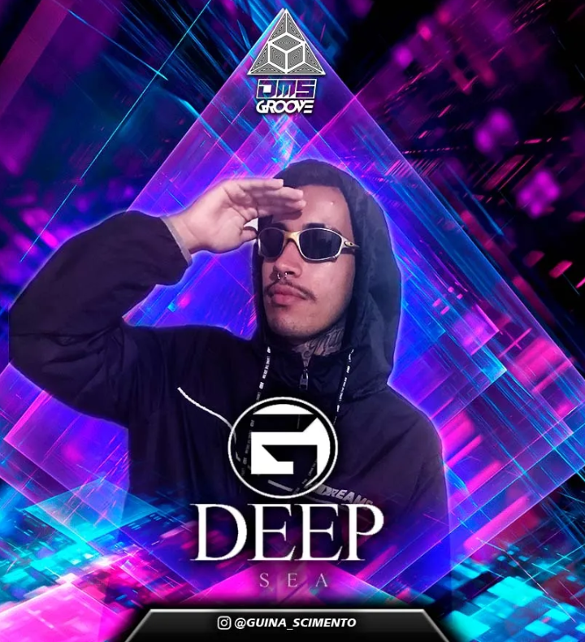
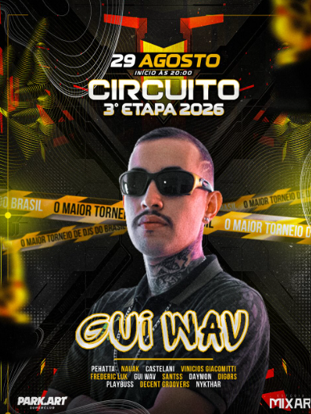
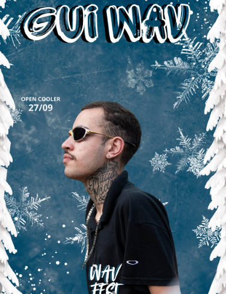
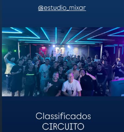

Curitiba · Circuito 2026 · WAV Fest
A frequência que a capital já conhece pelo nome.
Guilherme do Nascimento. Minimal e Tech House. Vice-campeão da 3ª etapa e classificado para a final no Park Art.
01 / 05
Curitiba · Circuito 2026 · WAV Fest
Guilherme do Nascimento. Minimal e Tech House. Vice-campeão da 3ª etapa e classificado para a final no Park Art.

LP SINAL · 21 nov 2026
Oito faixas como transmissão de Curitiba: do Batel às 3h17 até o hino da WAV Fest.

Arquivo de cena
Collab visual da trajetória — a marca agora é a onda ciano, o Circuito e a WAV Fest.

Comunidade
A pista já escreve o nome. O press kit e o booking só formalizam o que a cidade sente.

#RumoAoParkArt
A mesma cabine, a mesma entrega, o próximo endereço: Park Art.
Números reais do perfil
seguidores em @gui_wav
plays no set @CIRCUITO2026
razão comentário/like no post da jornada
início oficial da carreira
anos no primeiro contato com eletrônica
lugar na 3ª etapa — vaga na final
Artista
Formado pela AIMEC Curitiba, influenciado por Louie Cut e Avrosse. Transita entre Minimal e Tech House no projeto principal e abre o portal psytrance como Frenyx.
Ler a históriaLP SINAL · 21 nov 2026
Oito faixas pensadas como transmissão de Curitiba para o Circuito: do Batel às 3h17 até o hino da WAV Fest.
Abrir landing da LPAgenda
Pista real
GUIWAVE
SINAL
CWB
GANG
Identidade


